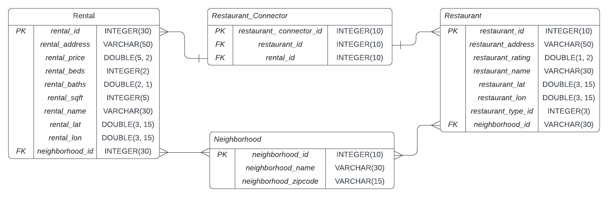

NeighborhoodInspector Web Application Development
Project Description
My partner and I recently moved back to Seattle and have been looking for a new apartment. In this process, we have been looking for rental properties that are close to things to do, and one of the essential things that we love to do is eat. We have found that no rental search services look at the things to do in the neighborhood these rental properties are in instead of the amenities of the property itself. Seeing this and using the skills I obtained in my Master’s programs, I have taken on this project to create a new web application to find our next apartment.
ELT Pipelines for Database Updates
The basic structure of the ETL used AWS Lambda Functions, and the initial data comes from a Zillow Rental API and Google Place API data. A nightly task will start an ELT flow of AWS Lambda functions. I chose to use Lambda functions because it is computationally inexpensive and easily testable due to only needing to set up Python scripts. I have also decided to interact with the MySQL database through a REST API to update and add records to the database.
Test operations were needed to establish data parity and cleanliness to ensure the ETL pipeline was successful. All transformations provide that data is complete and the same, and any data that isn’t complete is either deleted or transformed.
Using an API to query the database was also a decision made over direct connections to the database to have a secondary layer of test operations to ensure data is in the relevant format. This data flow required a little more setup, but it was needed to ensure data completeness across the ETL pipeline.
Database Schema
The initial database schema is quite simple, with a many-to-many relationship. This schema will allow for expansion with new attributes and a more complex database structure. Expanding with functionality and gaining end-user experience will increase services for the NeighborhoodInspector web application.
Initial Functionality of Web Application
I decided to use a Flask Web Server configuration to connect directly with the MySQL database, which allows testing the functionality on a local instance. This framework is highly adaptable and scalable to more complex functionality and resources. The decision to create the application in a Flask framework was easy for this development project.
The initial functionality of the application is a Leaflet.js web map that utilizes markers to show the locations of Rental properties. When those Rental properties are selected, a query shows all the restaurants in a 400m vicinity. This call was created using GET and PUSH requests to the Flask web app framework.
Planned Functionality of Web Application
The following steps of this process will have a user interface and a recommender system to create recommendations of user preferences for types of restaurants and other activities within the vicinity of the rental properties. The users will be able to like particular rental properties saved to a list, and then new recommendations will be given daily.
Next Steps
I am working with this application, hosting it on AWS using an EC2. A VPC within the AWS environment is also on the radar when implementing these technologies. Ensuring security within my hosted application is at the forefront of my mind. While also interacting with my web map and finding restaurant locations within the rental properties.
This application has propelled my development skills and understanding of how web applications are implemented on a larger scale. Having this understanding as a data scientist or data engineer allows those teachings to carry over to real-world implementations of those tools. If data science, for instance, weren’t implemented in a state where someone could interact with it, then there would be no need for the resource.
I look forward to continuing this software development process